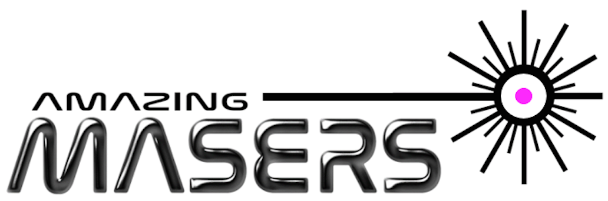

Royal Society Summer Exhibition 2017
Posted on Wed 19 July 2017 in masers • Tagged with masers, royal society
We (a joint venture between Imperial College London and University College London) recently exhibited at the Royal Society Summer Exhibition 2017.

Our exhibit 'Amazing Masers' exhibit showcased our room-temperature maser, the first time it has been outside a lab. We also encouraged visitors to build pentacene, p-terphenyl and other molecules and test drive a robotic mars rover on a CNC machined model of the surface of Mars via a video feed.
Here's our video that explains what masers are, what they do and what they could do:
Thanks to our volunteers we had a very successful week with only a few minor technical hitches. We hope that our visitors enjoyed the exhibit and learnt about masers and their new exciting future.